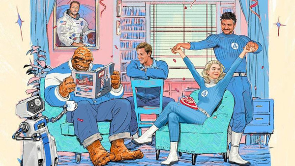

Esse ano de 2025 promete filmes que vão te fazer fazer pular da cadeira de tanta emoção.
Venha conferir a nossa lista e suas datas de lançamento
Nosferatu - 2 de Janeiro
Logo no ínicio de 2025, o brilhante diretor Robert Eggers irá nos trazer a volta de um clássico do terror.
Em Nosferatu Um vampiro antigo da Transilvânia Bill Skarsgård, persegue uma jovem atormentada Lily-Rose Depp, na Alemanha do século 19.
O filme é remake da obra original de mesmo nome, lançada em 1926, agora contendo um elenco de peso e um diretor respeitado no genero de terror. O longa será lançado em 2 de Janeiro de 2025
Confira o trailer a seguir
Capitão América: Admirável Mundo Novo - 14 de fevereiro

O primeiro filme da marvel do ano chega em feveveiro,envolto de muitas polêmicas
A continuação de da trilogia de Capitão américa trará Sam Wilson no manto do amado herói. O Filme passou por algumas sessões teste, e mão obteve reações postivas do público, fazendo muitos criarem um certo receio da obra.
Trailer a seguir
Invocação do Mal 4
A continuação do Invocaverso trará o último filme da franquia principal que deu ínicio a esse universo de terror.
O filme ainda não tem data definida, mas está definido pra chegar em 2025.
Michael
as cinebiográfias de músicos famosos estão ganhando cada vez mais espaço no dias de hoje, entã a chegada do filme da estrela do pop era inevitável.
O filme não possui trailer nem data de lançamento, mas sem dúvidas, marcará muito em 2025
Wake Up Dead Man : um mistério Knives Out
Após as duas primeiras sequências de sucesso, Benoit Blanc volta para mais uma continuação de Entre facas e segredos
O filme ainda se encontra sem data
Quarteto Fantástico : primeiros passos
agora falando sobre o filme da marvel mais aguardado do ano,Quarteto Fantástico traz nosso icônicos heróis com novos atores em um novo universo.
Será que essa tão amada equipe vão ter adaptações dignas de seus personagens ? é o que veremos em 24 de Julho
